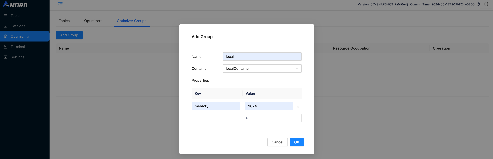
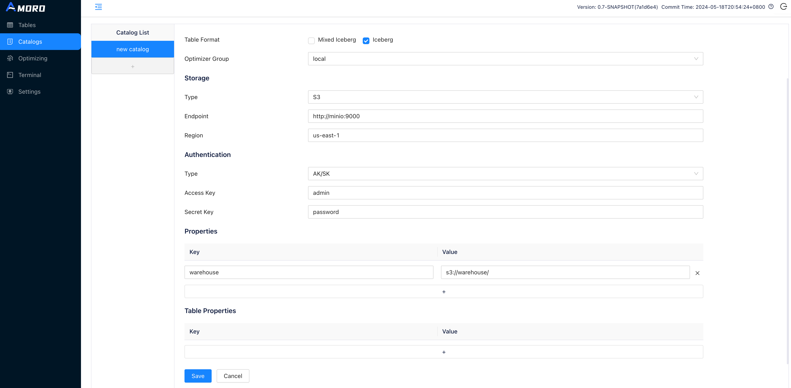
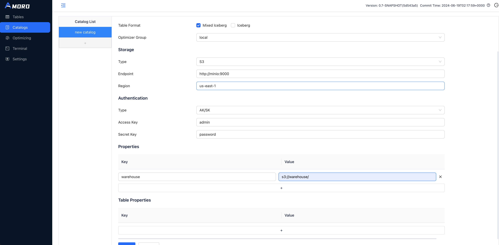
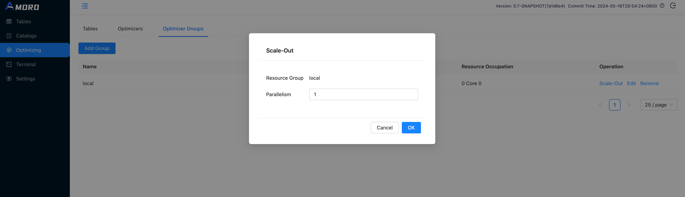
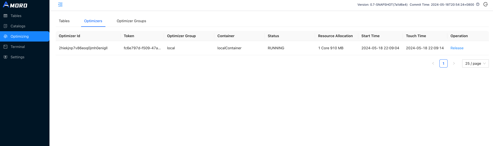
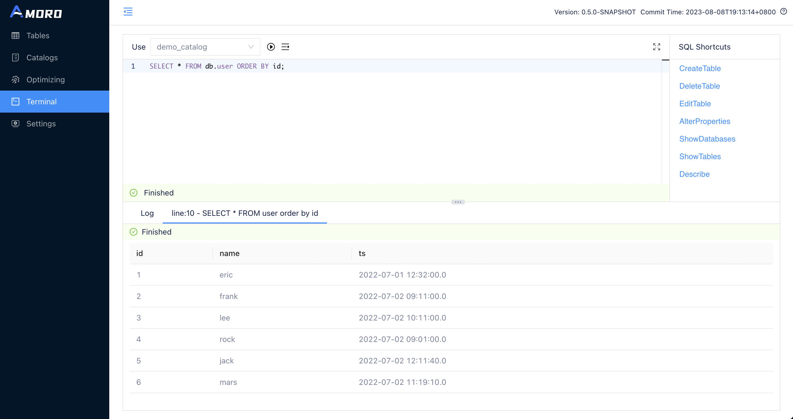
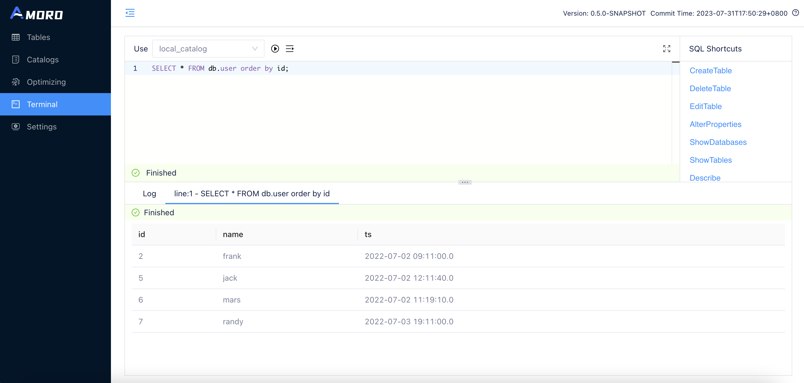
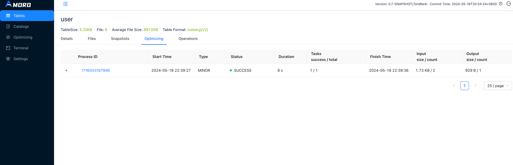
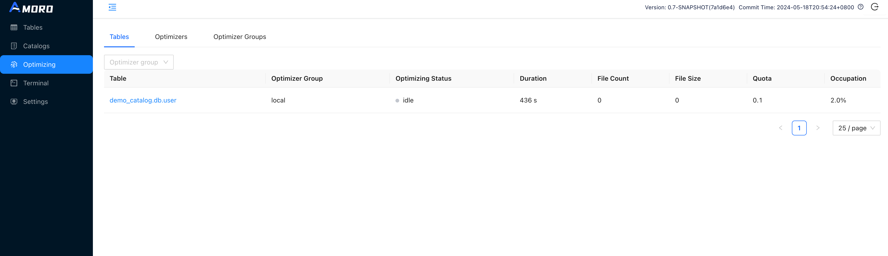

Quick Demo
This guide outlines the basic process of using Amoro, allowing you to quickly experience its core features. You can choose to use either the Iceberg Format or the Mixed-Iceberg Format to complete the entire process.
If you are more interested in the Mixed-Hive Format or the Paimon Format, you can refer to: Mixed-Hive Format and Paimon Format. For specific information on the different formats supported by Amoro, please refer to: Table Format.
Before starting the quick demo, some steps are required to prepare the environment. Here are two ways to complete the necessary preparation:
Prepare steps
Create optimizer group
Open http://localhost:1630 in a browser, enter admin/admin to log in to the dashboard.
Click on Optimizing in the sidebar, choose Optimizer Groups and click Add Group button to create a new group befre creating catalog:

Create catalog
Click on Catalogs in the sidebar, click on the + button under Catalog List to create a test catalog, and name it to demo_catalog:
To use the Iceberg Format, select Type as Internal Catalog, and choose Iceberg as Table Format.

To use the Mixed-Iceberg Format, select Type as Internal Catalog, and choose Mixed-Iceberg as Table Format.

If you deployed the demo environment using Docker-Compose:
- Hadoop configuration files are stored in
<ARCIT-WORKSPACE>/hadoop-config. - Warehouse path should be set to
hdfs://namenode:8020/user/arctic/demo_warehouse.
If you deployed the demo environment through binary release:
- Don’t need to upload the Hadoop configuration files.
- Warehouse path should be set a directory which the hadoop user have the read and write privileges.
Start optimizers
Click on Optimizing in the sidebar, select the Optimizer Group tab, and click the scale-out operation for group local.

Set the concurrency of the optimizer to 1 and click OK.
Then you can switch the tab to Optimizers, you can find the newly launched optimizer here.

Demo setps
Initialize tables
Click on Terminal in the sidebar, you can create the test tables here using SQL. Terminal supports executing Spark SQL statements for now.
CREATE DATABASE IF NOT EXISTS db;
USE db;
CREATE TABLE IF NOT EXISTS user (
id INT,
name string,
ts TIMESTAMP
) USING iceberg
PARTITIONED BY (days(ts));
INSERT OVERWRITE user VALUES
(1, "eric", timestamp("2022-07-01 12:32:00")),
(2, "frank", timestamp("2022-07-02 09:11:00")),
(3, "lee", timestamp("2022-07-02 10:11:00"));
SELECT * FROM user;
CREATE DATABASE IF NOT EXISTS db;
USE db;
CREATE TABLE IF NOT EXISTS user (
id INT,
name string,
ts TIMESTAMP,
PRIMARY KEY(id)
) USING arctic
PARTITIONED BY (days(ts));
INSERT OVERWRITE user VALUES
(1, "eric", timestamp("2022-07-01 12:32:00")),
(2, "frank", timestamp("2022-07-02 09:11:00")),
(3, "lee", timestamp("2022-07-02 10:11:00"));
SELECT * FROM user;
Click on the RUN button uppon the SQL editor, and wait for the SQL query to finish executing. You can then see the query results under the SQL editor.
Start Flink ingestion job
If you have prepared the environment using Docker-Compose, you can open a terminal in docker using the following command:
docker exec -it quickdemo bash
Then you can start the standalone Flink cluster using the following command:
cd <FLINK_DIR>
./bin/start-cluster.sh
After you start the Flink cluster, you can open the Flink dashboard by visiting http://localhost:8081.
Then execute the following command to start the Flink SQL Client:
./bin/sql-client.sh embedded
Enter the following SQL statements one by one to start the Flink ingestion job since the Flink SQL Client does not support batch SQL input:
CREATE CATALOG iceberg_catalog WITH (
'type' = 'iceberg',
'catalog-impl' = 'org.apache.iceberg.rest.RESTCatalog',
'uri'='http://127.0.0.1:1630/api/iceberg/rest',
'warehouse'='demo_catalog'
);
-- Recreate table with Flink as Only Flink support primary key for iceberg format table
DROP TABLE `iceberg_catalog`.`db`.`user`;
CREATE TABLE IF NOT EXISTS `iceberg_catalog`.`db`.`user` (
id INT,
name string,
ts TIMESTAMP_LTZ,
PRIMARY KEY(id) NOT ENFORCED
) with ('format-version'='2', 'write.upsert.enabled'='true');
INSERT INTO iceberg_catalog.`db`.`user` (id, name, ts) VALUES
(1, 'eric', CAST('2022-07-01 12:32:00' AS TIMESTAMP)),
(2, 'frank', CAST('2022-07-02 09:11:00' AS TIMESTAMP)),
(3, 'lee', CAST('2022-07-02 10:11:00' AS TIMESTAMP));
-- Create CDC socket source table
CREATE TABLE cdc_source(
id INT,
name STRING,
op_time STRING
) WITH (
'connector' = 'socket',
'hostname' = 'localhost',
'port' = '9999',
'format' = 'changelog-csv',
'changelog-csv.column-delimiter' = '|'
);
-- Disable Flink engine form filtering on Delete data
set table.exec.sink.upsert-materialize=none;
-- Start the Flink ingestion job
INSERT INTO `iceberg_catalog`.`db`.`user`
SELECT id,
name,
CAST(TO_TIMESTAMP(op_time) AS TIMESTAMP(6) WITH LOCAL TIME ZONE) ts
FROM cdc_source;
CREATE CATALOG arctic_catalog WITH (
'type' = 'arctic',
'metastore.url'='thrift://127.0.0.1:1260/demo_catalog'
);
-- Create CDC socket source table
CREATE TABLE cdc_source(
id INT,
name STRING,
op_time STRING
) WITH (
'connector' = 'socket',
'hostname' = 'localhost',
'port' = '9999',
'format' = 'changelog-csv',
'changelog-csv.column-delimiter' = '|'
);
-- Disable Flink engine form filtering on Delete data
set table.exec.sink.upsert-materialize=none;
-- Start the Flink ingestion job
INSERT INTO `arctic_catalog`.`db`.`user`
SELECT id,
name,
CAST(TO_TIMESTAMP(op_time) AS TIMESTAMP(6) WITH LOCAL TIME ZONE) ts
FROM cdc_source;
Open a new terminal. If you deployed the demo environment using Docker-Compose, you can use the following command to reopen a terminal of the container. The required commands are already installed inside the container.
docker exec -it quickdemo bash
Execute the following command in the newly opened terminal. It will open a socket channel to the cdc_source table, allowing us to insert some test data into the table.
nc -l -p 9999 -k
nc -lk 9999 instead.
Send the following content into the socket channel, and make sure to add a break line after the last line of data to ensure that the last line of data is correctly sent.
INSERT|4|rock|2022-07-02 09:01:00
INSERT|5|jack|2022-07-02 12:11:40
INSERT|6|mars|2022-07-02 11:19:10
Wait for at least 10 seconds (depending on the checkpoint interval configured in flink-conf.yaml), open the Dashboard and go to the Terminal page, then execute:
SELECT * FROM db.user ORDER BY id;
You will get the following execution result:

Continue to send the following data into the socket channel:
DELETE|1|eric|2022-07-01 12:32:00
INSERT|7|randy|2022-07-03 19:11:00
DELETE|4|rock|2022-07-02 09:01:00
DELETE|3|lee|2022-07-02 10:11:00
Query the content of the test table by Terminal again, you will get the following result this time：

Check self-optimizing
As new data is written to the table, Amoro will automatically trigger self-optimizing on the table.
Click on Tables in the sidebar, select the test table to enter the table details page, switch to the Optimizing tab, where you can see all the self-optimizing tasks on the table.

You can also enter the Optimizing page through the the sidebar to view the current optimizing status of all tables.

For more information on Self-Optimizing, please refer to: Self-optimizing